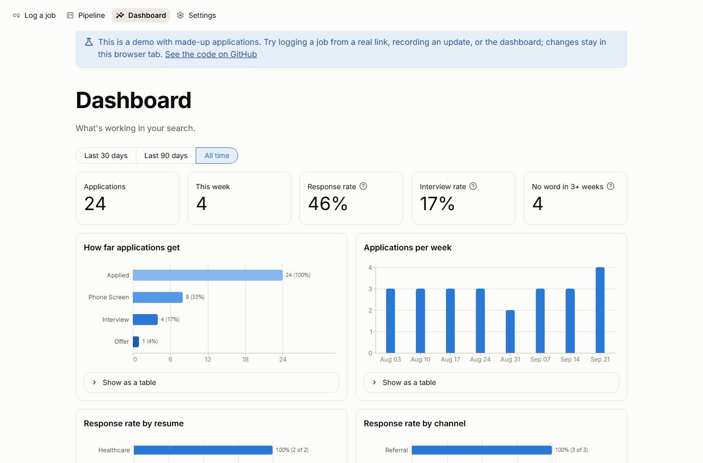

Job Search Tracker
A web app for tracking job applications without spreadsheets or SQL. Paste a job link and the company, role, location, pay and description fill themselves in, from the job data many career sites publish. Record replies as they come in, and the dashboard shows which resume versions and channels actually get responses.
- Reads links from Greenhouse, LinkedIn, Workday, Lever, Ashby, iCIMS and Oracle career sites; Claude fills in anything missing
- MySQL database with a status history per application, so the funnel and response rates come straight from the data
- Built for any field: users name their own resume versions, channels and hiring stages